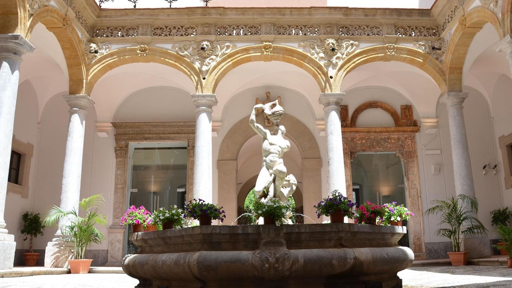

-IL MUSEO ARCHEOLOGICO REGIONALE "ANTONIO SALINAS"-
Il Museo è situato in un edificio eretto sul finire del XVI sec. durante la dominazione spagnola su un progetto dell’ architetto Antonio Muttone, un tempo utilizzato come sede della congregazione dei Padri Filippini all’Olivella. Le opere presenti illustrano le diverse fasi dell'arte e della civiltà della Sicilia occidentale, dalla preistoria al medioevo. Il Museo accoglie esempi del collezionismo settecentesco e ottocentesco, anche di provenienza non siciliana, come la Collezione etrusca Casuccini, rinvenuti grazie all'infaticabile attività di Antonino Salinas (1841-1914) cui è dedicato l'Istituto. Già nel 1814 un primo nucleo della casa era gestito dall’Università di Palermo e dedicato ad esposizioni di opere e collezioni private appartenenti a nobili palermitani. Solo nel 1860 fu trasformato in Museo Nazionale, sotto la direzione del cavaliere Giovanni D’Ondes Reggio. In questo periodo altri reperti Etruschi si aggiunsero alla ricca collezione acquistati dal Regno d’Italia già dal 1865. Durante la seconda guerra mondiale, per preservare le collezioni dai bombardamenti, la direttrice del museo Jole Bovio Marconi fece spostare tutte le collezioni presso il monastero di San Martino delle Scale. Finita la guerra, la struttura era stata fortemente danneggiata e nel 1949 la stessa direttrice si occupò del riallestimento museale con un nuovo progetto di recupero architettonico curato dall’Architetto-G.De-Angelis-D’Ossat. In quegli stessi anni, il Museo si arricchì di reperti archeologici grazie agli scavi effettuati nella Sicilia occidentale. Nel 1977 il Museo nazionale di Palermo divenne Regionale e gestito dal Dipartimento regionale dei beni culturali e dell’identità siciliana. Dal 2009 al 2016 il Museo rimase chiuso per restauro e riammodernamento della struttura con un intervento che interessava l’intero complesso monumentale che comprende 10.000 mq di superficie. Oggi il Museo fa parte dei poli museali regionali ed è parzialmente aperto in attesa del completamento-degli-allestimenti.

-Piano terra-
Nel Chiostro Maggiore, si trovano esposti i reperti provenienti dagli scavi e dalle acquisizioni avvenute tra la metà del Settecento e l’Ottocento. Spiccano i reperti archeologici del periodo punico-romano ritrovati nella vicina Solunto. Reperti provenienti da Tindari, oltre a ritrovamenti subacquei, materiali che facevano parte del carico delle navi, ancore di pietra, ceppi di piombo, lucerne, anfore ed iscrizioni.
Lungo il portico settentrionale sono esposte, tra le altre opere. il torso dello Stagnone di Marsala, i famosi sarcofagi fenici della Cannita (Portella di Mare vicino Palermo) e la statua colossale di Zeus da Solunto, accuratamente restaurata e le gigantesche sculture di Salunto e Tindari (la statua dell’imperatore Claudio).
-Il dorso dello stagnone di Marsala-
Si tratta di una statua di divinità, probabilmente Ercole, rinvenuta nello Stagnone che è la laguna difronte Marsala dove si trova Mozia, isola fenicia, l’ antica Lilibeo. Probabilmente l’autore era greco. La statua è stante, il braccio destro è è disteso e chiuso a pugno, il braccio sinistro, invece, è piegato sul petto e chiuso a pugno. La divinità indossa un gonnellino pieghettato. Le superfici non sono liscie a causa della lunga permanenza della statua nella laguna.
-I sarcofagi della cannita-
Nel 1695 alcuni cavatori di pietra, nel corso del loro lavoro di taglio del travertino, scoprirono casualmente una tomba a camera che conteneva al suo interno un sarcofago antropoide di tipo fenicio. Il rinvenimento, così come un altro di qualche anno prima di cui si ha solo una breve notizia, avvenne in località Portella di Mare, una pianura che si estende nell’immediato entroterra di Solunto e nelle adiacenze del piccolo insediamento antico sorto sul Pizzo Cannita, un modesto rilievo nella bassa valle del fiume Eleuterio. Del sarcofago si recuperò solo il coperchio su cui era scolpita a rilievo una figura femminile con fascia intorno alla testa e semplice lungo abito liscio con brevi maniche a pieghe; le braccia sono distese e accostate al corpo. Pur trattandosi di una tipologia tipicamente orientale, la raffigurazione del volto rivela una profonda influenza dell’arte classica, permettendone una datazione entro la prima metà del V sec.a.C. Di qualche decennio più antico sembra essere, invece, il sarcofago recuperato nel 1725 in un’altra sepoltura scoperta nella stessa località e anch’esso conservato al Museo Archeologico di Palermo. Notizie relative alle tombe si hanno dalla relazione manoscritta dell’abate cassinese Michele Del Giudice, conservata alla Biblioteca Comunale di Palermo: esse rientravano tutte nella tipologia della camera ipogeica scavata nel banco roccioso, a pianta quadrangolare con tetto piano e ingresso chiuso da un lastrone litico, cui si accedeva da Est tramite un dromos (corridoio) a gradini, tipologia ben nota in tutto il mondo punico occidentale. I due sarcofagi antropoidi, tuttavia, sono gli unici esemplari di questa categoria scultorea rinvenuti fino ad oggi in Sicilia.
-La statua colossale di Zeus-
In una esedra è presente la statua colossale di Zeus stato rinvenuto a Tindari. La statua alta 2 metri, stante e frontale è una copia romana di un’ originale di età ellenistica. Probabilmente reggeva un lungo scettro con la mano destra. Il mantello è semi- panneggiato e copre soltanto la spalla sinistra e la parte del mantello che cade in avanti è triangolare. Quanto la stasi la gamba sinistra è portante, la destra è flessa e portata all’indietro. Questo movimento delle gambe si riflette nel corpo, l’ anca sinistra probabilmente doveva essere più pronunciata rispetto alla destra.
-La statua di Claudio-
In un’altra esedra è presente la statua dell’ imperatore Claudio (I sec. d.C), rinvenuta a Tindari. L’ imperatore siede su uno sgabello, semi-nudo, con la mano destra tiene una corona di quercia e probabilmente con la sinistra teneva un lungo scettro. È descritto con tratti divini. Dimostrava che anche la Sicilia tributava agli imperatori viventi la propria fedeltà e a quelli defunti il proprio culto.
-Le oreficerie della necropoli di Tindari-
Una intera sezione è dedicata all’esposizione delle splendide oreficerie dalla necropoli di Tindari, diverse epigrafi e una originale meridiana di marmo; altri reperti quali: vasi, epigrafi e sculture da Centuripe, materiali dalla necropoli di Randazzo, tutti raccolti, esposti e catalogati con cura e dedizione. E ancora: una collezione del console inglese Robert Fagan che comprende anche un frammento del fregio orientale del Partenone, vasi figurati dalla necropoli di Agrigento, sculture architettoniche e materiali votivi dei santuari agrigentini. Con la riapertura del 2018, venne inaugurato un nuovo spazio espositivo intorno al terzo cortile del convento, denominato “Agorà”. La corte, coperta in vetro e acciaio, oggi è uno spazio polifunzionale usato per convegni, esposizioni temporanee, performance artistiche e concerti. Attualmente si trovano esposte le 17 gronde leonine del tempio della Vittoria di Himera e la grande maschera della Gorgone del tempio C di Selinunte.
-Terzo cortile-
Intorno al terzo cortile ruotano le otto sale dedicate a Selinunte i culti, le architetture e le sculture, con l’esposizione di materiali votivi, oggetti metallici quali armi, ami da pesca e attrezzi agricoli. Di notevole interesse rimane la grande sala, che fu refettorio dei Padri Filippini. Qui si trovano esposte le famose metope dei templi di Selinunte, uno dei più importanti complessi dell’arte greca d’Occidente insieme al tempio denominato “C” della stessa area. Sono esposti frammenti scultorei e una consistente selezione di terrecotte architettoniche, che conservano ancora la loro originaria e vivace policromia. Lungo le corsie occidentale e meridionale, spiccano il gruppo di iscrizioni da Palazzo delle Aquile e diversi sarcofagi di età romana. E poi, iscrizioni da Segesta, da Halesa, da Termini Imerese e Taormina. Di grande interesse sono i materiali votivi provenienti dal Santuario di Demetra Malophorose e della stele dedicato a Zeus Meilichios.
-Le metope dei templi di Selinunte-
Nell’antico refettorio del museo sono esposte le famose metope dei Templi di Selinunte, il più importante complesso scultoreo del mondo greco occidentale. Le metope sono le lastre di pietra scolpite che proteggevano le parti terminali delle travi di legno che reggevano il tetto. La Sala dedicata a Selinunte raccoglie alcune metope asportate dai templi dell'antica città greca. Si tratta del complesso scultoreo più importante dell'arte figurativa greca d' Occidente: dal tempietto Y provengono le metope raffiguranti la triade delfica, la sfinge, il rapimento di Europa, Helios, Selene e le Moire e altre. Le metope del tempio C rappresentano la quadriga di Apollo, Perseo che decapita la Gorgone ed Eracle. Le metope del tempio F, danneggiate, rappresentano la gigantomachia. Del tempio E sono invece rimaste le quattro metope con la lotta di Eracle con l'Amazzone, le nozze di Zeus ed Era, Atteone e Artemide e Atena ed Encelado. Queste metope sono state portate alla luce da Antonio Salinas e da Sebastiano Tusa. Sono state tratte non dal tempio a cui appartenevano ma da una collocazione successiva.
Primo piano
Le sale sono destinate all’esposizione di collezioni di opere risalenti all’Ottocento, riordinate secondo la loro originaria composizione. Molte le opere provenienti dalle donazioni borboniche ricomposte nei loro originari raggruppamenti (Casa di Sallustio di Pompei e villa di Torre del Greco), nonché il famoso ariete bronzeo destinato al Museo di Palermo da Vittorio Emanuele II. Una sezione è interamente dedicata alle oreficerie e alle ricche collezioni numismatiche del Medagliere
Secondo piano
Le sale sono destinate all’esposizione di una ricca serie di materiali provenienti da scavi archeologici effettuati in diversi insediamenti e città della Sicilia centro-occidentale, qui è possibile delineare in maniera completa e singolare l’intera storia dell’Isola, dai più antichi periodi preistorici e protostorici, alla colonizzazione fenicia, dal periodo romano e bizantino fino all’età medievale.